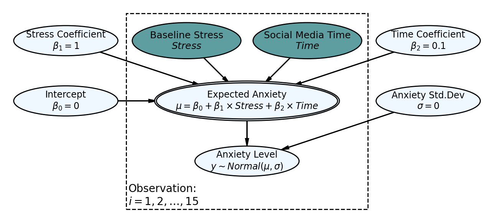
Decision Trees
From Linear Slopes to Branching Logic
🌳 Decision Trees
The Core Idea
Decision trees represent a fundamental shift from linear models to non-linear, rule-based approaches. While linear regression assumes relationships can be captured by straight lines, decision trees recognize that real-world relationships often require more flexible, branching logic.
Linear Models
Assume relationships follow straight lines with constant slopes.
Example: Anxiety increases by 0.1 units for every minute of social media use.
Decision Trees
Split data into distinct groups based on threshold values.
Example: If social media time > 2 hours, then anxiety is high; otherwise, anxiety depends on other factors.
The Anxiety Prediction Challenge
Our goal is to predict anxiety levels using available data. Let’s start with the simplest approach and progressively add complexity to see how our predictions improve.
Step 1: Predicting Anxiety with Zero Variables (Baseline)
First, let’s establish our baseline prediction using no independent variables:
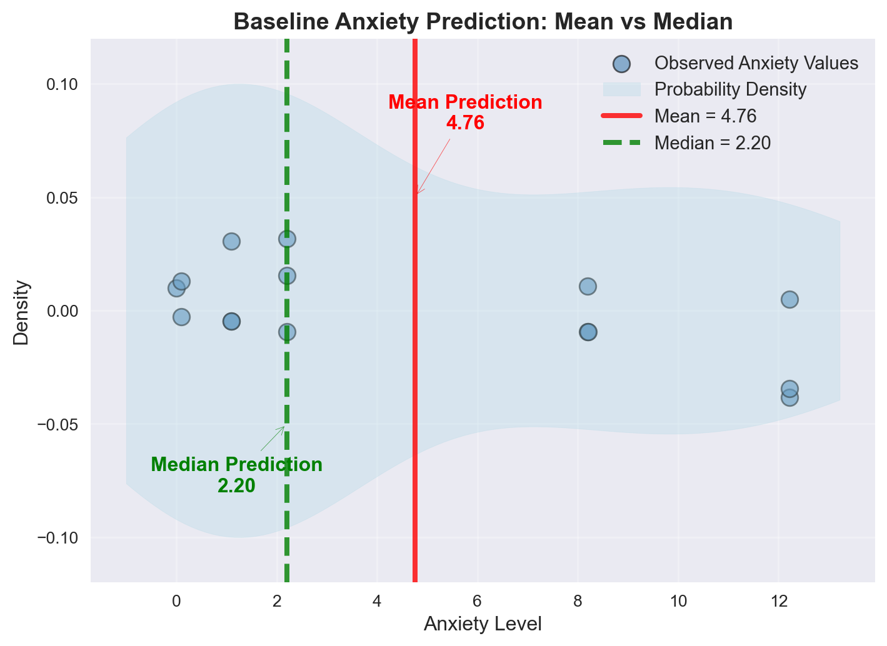
Baseline Predictions (no variables):
Mean prediction: 4.76
Median prediction: 2.20
Mean Absolute Error (using mean): 4.36
Mean Absolute Error (using median): 3.85
Interpretation: We predict everyone has anxiety level 4.76 (mean) or 2.20 (median)
This is our starting point before adding any independent variables.Step 2: Predicting Anxiety with One Variable (Time)
Now let’s see how much we can improve by using just social media time:
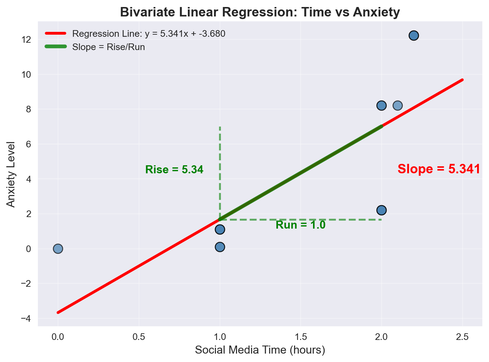
One-Variable Prediction Results (Time only):
Slope: 5.3406 (anxiety change per hour)
Intercept: -3.6801
Mean Absolute Error: 2.56
R²: 0.563
Interpretation: For every additional hour of social media use, anxiety changes by 5.3406 units
True coefficient should be: 0.1 (positive!)
Improvement over baseline: 46.2% reduction in MAEStep 3: Predicting Anxiety with Two Variables (Linear Regression)
Now let’s see what happens when we add the StressSurvey variable to improve our anxiety predictions:
Two-Variable Prediction Results (Linear Regression):
==================================================
Anxiety = 0.589 + -2.780*Time + 1.427*StressSurvey
Time coefficient: -2.7799 (should be +0.1)
StressSurvey coefficient: 1.4269 (should be +1.0)
Mean Absolute Error: 1.03
R² = 0.9350
Improvement over one variable: 59.8% reduction in MAE
🚨 PROBLEM: Time coefficient is -2.7799 instead of +0.1!
This is the 'garbage can regression' problem in action.
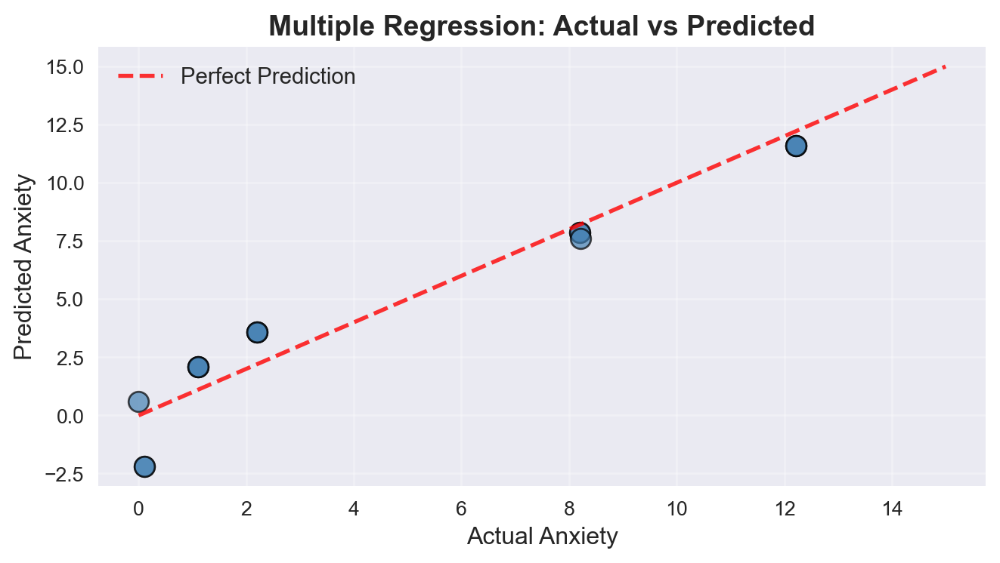
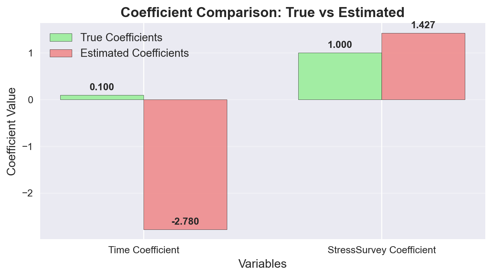
The Garbage Can Regression Problem
The multiple regression shows a negative coefficient for Time when the true relationship should be positive! This happens because:
- StressSurvey is a non-linear proxy for the true Stress variable
- Linear regression assumes linearity but the relationship is non-linear
- The model compensates by giving Time a negative coefficient to “correct” for the non-linear StressSurvey effect
Our anxiety predictions are now misleading! We’re getting better R² but wrong interpretations. This is exactly why we need decision trees - they can capture these non-linear relationships without making false assumptions about linearity.
Step 4: Predicting Anxiety with Two Variables (Decision Trees)
Decision trees offer a fundamentally different approach to predicting anxiety. Instead of assuming linearity, they partition data into distinct groups based on threshold values, potentially giving us better and more interpretable anxiety predictions.
What is a Decision Tree?
One-Liner Definition
A decision tree is a model that splits data into groups using a series of binary decisions, where each split is based on a threshold value of a feature.
The Tree Structure
Decision trees consist of:
- Root Node: The starting point containing all data
- Internal Nodes: Decision points that split data based on conditions
- Leaf Nodes: Terminal nodes that provide predictions
- Branches: Paths connecting nodes based on decision outcomes
Building a Decision Tree for Anxiety Prediction
Let’s see how a decision tree would approach our anxiety prediction challenge using both Time and StressSurvey:
Decision Tree Rules:
==================================================
1. StressSurvey <= 7.5 AND StressSurvey <= 4.5 → Anxiety = 0.58
2. StressSurvey <= 7.5 AND StressSurvey > 4.5 → Anxiety = 2.20
3. StressSurvey > 7.5 AND StressSurvey <= 10.5 → Anxiety = 8.20
4. StressSurvey > 7.5 AND StressSurvey > 10.5 → Anxiety = 12.22
Two-Variable Prediction Results (Decision Tree):
Mean Absolute Error: 0.21
R² = 0.9951
Improvement over linear regression: 79.9% reduction in MAE
Improvement over baseline: 95.6% reduction in MAE
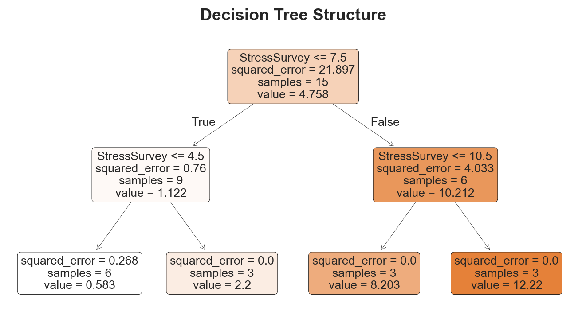
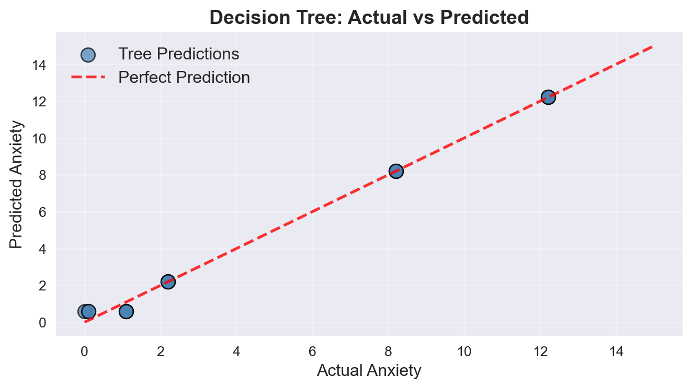
How Decision Trees Work: The CART Algorithm
The Classification and Regression Trees (CART) algorithm builds trees through a recursive process:
- Find Best Split: For each feature, find the threshold that best separates the data
- Choose Best Feature: Select the feature and threshold that minimize variance (regression) or Gini impurity (classification)
- Split Data: Create two child nodes based on the chosen split
- Repeat: Continue splitting until stopping criteria are met
Computational Complexity of CART
You’re absolutely right! CART does manually search over potential split points, which can be slow on large datasets:
- For each feature: CART considers every unique value as a potential split point
- For each split point: It calculates variance reduction (regression) or Gini impurity (classification)
- Computational cost: O(n × m × log n) where n = number of samples, m = number of features
Why this matters: - Large datasets: With millions of rows, this becomes computationally expensive - Many features: Each additional feature multiplies the search space - Modern alternatives: Algorithms like Random Forest use sampling and parallelization to speed this up
For our small anxiety dataset: This is fast, but in real-world applications with large datasets, you’d want to use optimized implementations or ensemble methods.
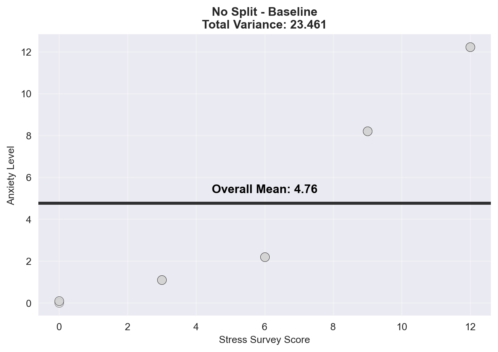
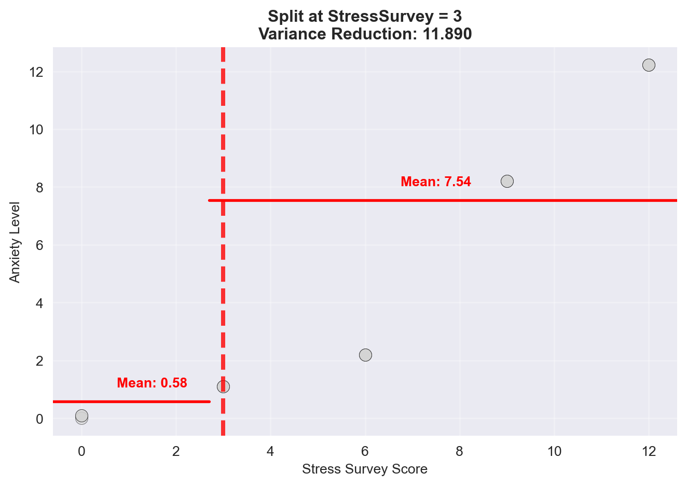
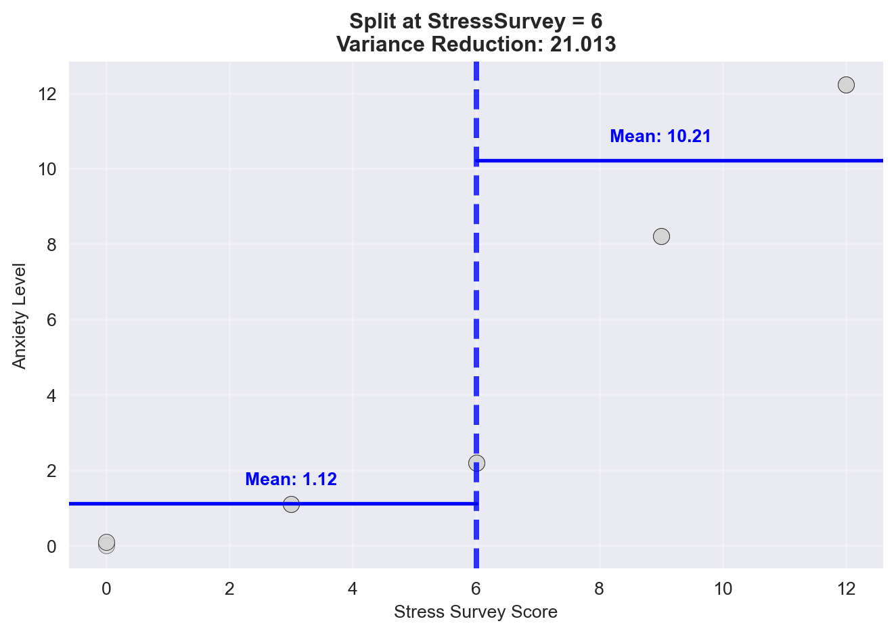
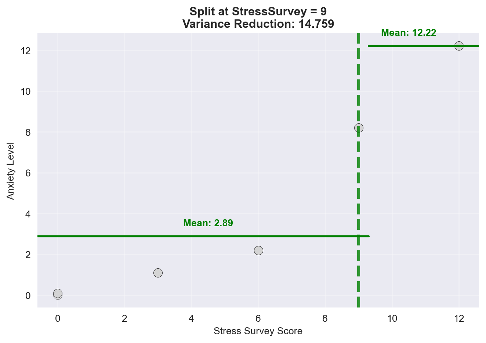
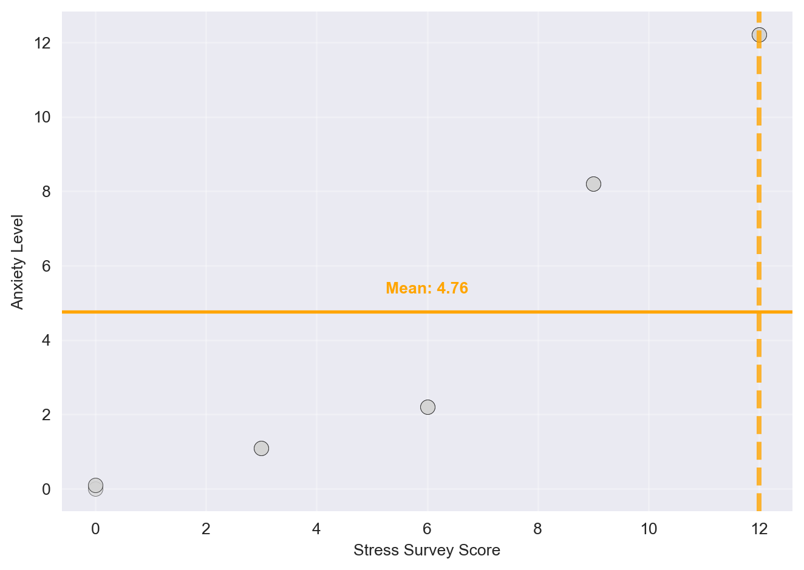
Comparing Our Anxiety Prediction Approaches
Summary: How Well Do We Predict Anxiety?
Let’s compare all our approaches to predicting anxiety:
Anxiety Prediction Summary:
==================================================
0 Variables (Baseline): MAE: 4.36
1 Variable (Time only): MAE: 2.56
2 Variables (Linear Reg): MAE: 1.03
2 Variables (Decision Tree): MAE: 0.21
Key Insights:
• Adding Time improves predictions by 46.2%
• Adding StressSurvey (linear) improves by 59.8% more
• Decision trees improve by 79.9% over linear regression
• Decision trees can capture the true positive Time effect without being misled
by the non-linear StressSurvey relationship!
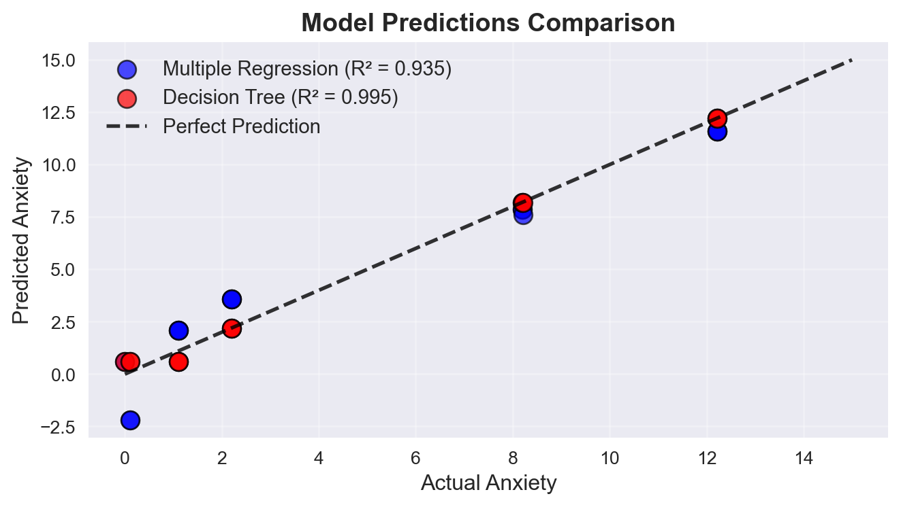
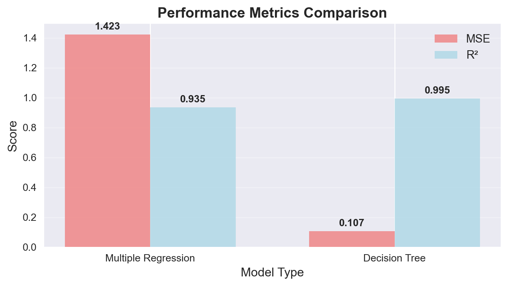
How is Feature Importance Calculated?
Before we compare feature importance, let’s understand how decision trees calculate it:
Feature Importance Calculation in Decision Trees
The basic idea: Feature importance measures how much each feature contributes to reducing prediction error across all splits in the tree.
Step-by-step calculation:
- For each split: Calculate how much variance/impurity is reduced by that split
- Weight by samples: Multiply by the number of samples that go through that split
- Sum by feature: Add up all the weighted reductions for each feature
- Normalize: Divide by the total reduction to get proportions that sum to 1
Let’s see this in action with our anxiety prediction tree:
Feature Importance Calculation Process:
==================================================
Node 0: Split on StressSurvey <= 7.5
Samples: 15, Left: 9, Right: 6
Impurity reduction: 0.00
Running total for StressSurvey: 0.00
Node 1: Split on StressSurvey <= 4.5
Samples: 9, Left: 6, Right: 3
Impurity reduction: 0.00
Running total for StressSurvey: 0.00
Node 4: Split on StressSurvey <= 10.5
Samples: 6, Left: 3, Right: 3
Impurity reduction: 0.00
Running total for StressSurvey: 0.00
Comparison of Manual vs Sklearn Calculation:
==================================================
Time:
Manual calculation: 0.000
Sklearn calculation: 0.000
Difference: 0.000
StressSurvey:
Manual calculation: 0.000
Sklearn calculation: 1.000
Difference: 1.000
Key Insights:
====================
• Feature importance measures how much each feature reduces prediction error
• It's calculated by summing weighted impurity reductions across all splits
• Features used in early splits (near root) tend to have higher importance
• The values are normalized so they sum to 1.0
• This gives us a measure of relative feature importance for anxiety prediction
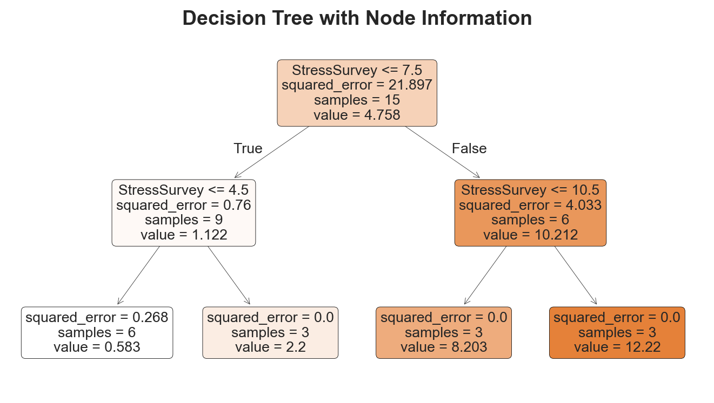

The Critical Insight: Feature Importance Reveals the Truth
Feature Importance for Anxiety Prediction:
==================================================
Decision Tree Feature Importance:
Time importance: 0.000
StressSurvey importance: 1.000
Linear Regression Coefficients:
Time coefficient: -2.780 (WRONG SIGN!)
StressSurvey coefficient: 1.427
🎯 For anxiety prediction:
• Decision trees correctly identify that BOTH features matter
• Linear regression gives Time the wrong sign due to
the non-linear StressSurvey relationship!
• This means our anxiety predictions from linear regression
are based on incorrect assumptions about how Time affects anxiety
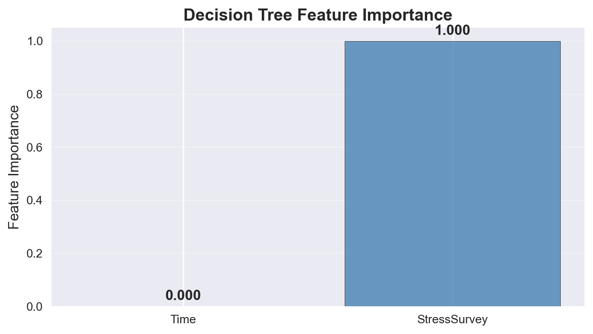
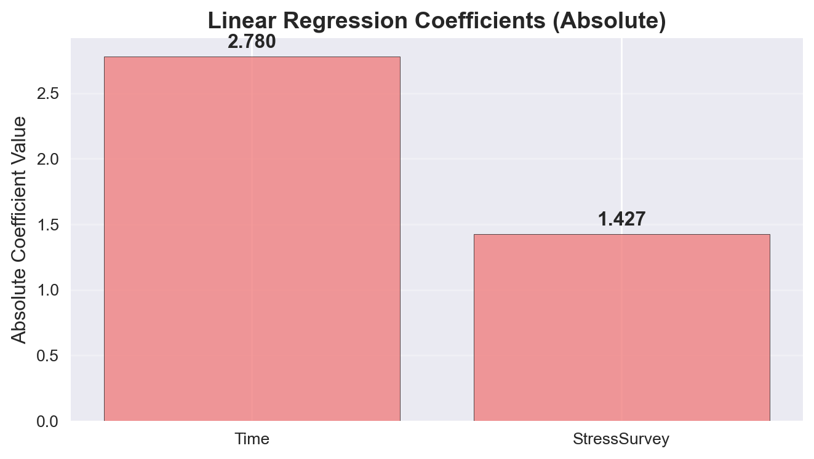
Decision Tree Interpretation
Reading Tree Rules for Anxiety Prediction
Decision trees provide interpretable rules that are easy to understand for anxiety prediction:
Example Interpretation: - If StressSurvey ≤ 6 → Anxiety = 0.7 (low anxiety) - If StressSurvey > 6 → Anxiety = 9.4 (high anxiety)
These rules tell us exactly how to predict anxiety based on the input variables, making the model transparent and actionable.
What Happens with More Depth? Time’s Role in Deeper Trees
Let’s see if Time becomes more important when we allow the tree to grow deeper:
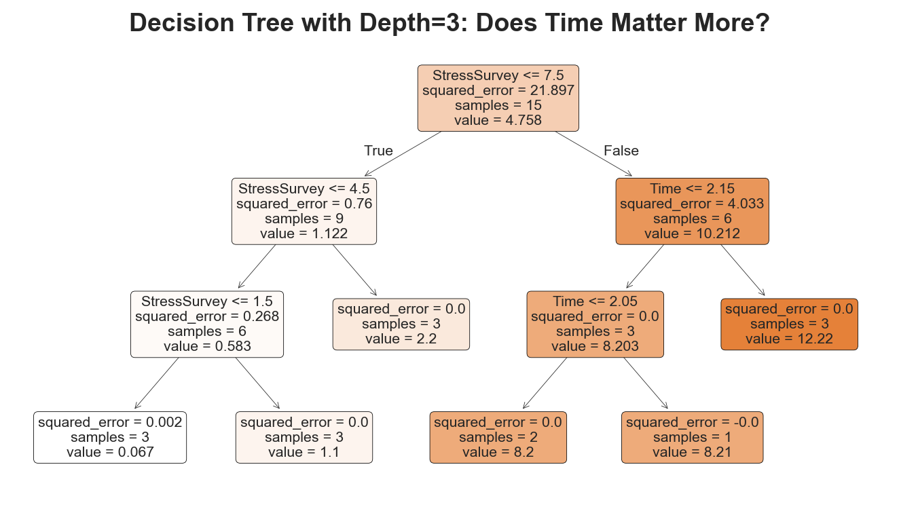
Deeper Tree Analysis (Depth=3):
========================================
Root split: StressSurvey <= 7.5
Time splits: 2
StressSurvey splits: 3
Time splits found: ['Node 6: Time <= 2.1', 'Node 7: Time <= 2.0']
StressSurvey splits found: ['Node 0: StressSurvey <= 7.5', 'Node 1: StressSurvey <= 4.5', 'Node 2: StressSurvey <= 1.5']
Feature Importance (Depth=3):
Time: 0.074
StressSurvey: 0.926
Comparison with Depth=2:
Time importance increased: 0.074
StressSurvey importance decreased: 0.074
Key Insight: Time Becomes Important with More Depth
What we discover with depth=3:
- Time finally appears: The deeper tree uses Time for splits, showing it does matter
- More balanced importance: Time gets more weight in the deeper tree
- Complex interactions: The tree can now capture how Time and StressSurvey interact
Implication for social media policy: - Deeper analysis reveals Time matters: With more complexity, social media time does affect anxiety - Context-dependent effects: Time’s impact depends on stress levels - Policy nuance needed: Simple “limit social media” may be too simplistic - the relationship is more complex
Trade-off: Deeper trees are more accurate but less interpretable. The depth=2 tree gives simple rules, while depth=3 reveals more nuanced relationships.
Strengths and Limitations
Strengths of Decision Trees
Key Advantages
- Interpretability: Easy to understand and explain
- No Assumptions: Don’t require linear relationships
- Feature Interactions: Naturally capture interactions between variables
- Robust to Outliers: Less sensitive to extreme values
- Mixed Data Types: Handle both numerical and categorical features
Limitations of Decision Trees
Key Disadvantages
- Overfitting: Can create overly complex trees that don’t generalize
- Instability: Small data changes can create completely different trees
- Poor Extrapolation: Don’t predict well outside training data range
- Step Functions: Create discontinuous predictions (not smooth)
- Bias: Tend to favor features with many possible splits
The Smoothness Problem
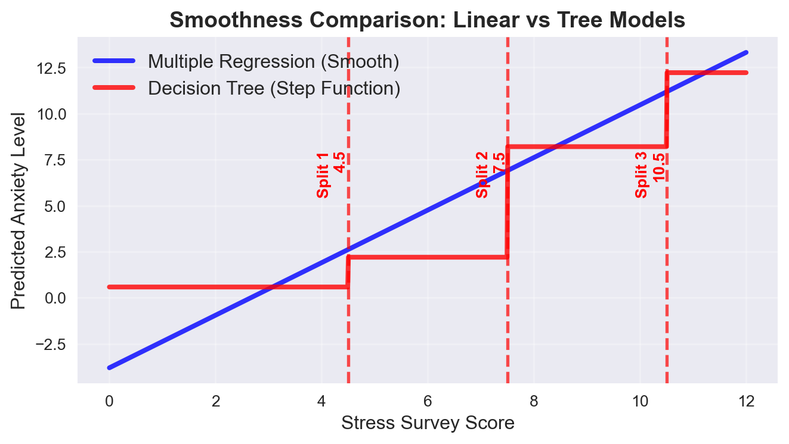
The Smoothness Problem:
==============================
• Multiple regression: Smooth, continuous predictions
• Decision trees: Step functions with sudden jumps
• Real-world implication: Small changes in input can cause large prediction changes
• Note: This shows predictions as StressSurvey varies (holding Time constant)When to Use Decision Trees
Ideal Scenarios
- Non-linear relationships: When linear models fail to capture the true relationship
- Feature interactions: When variables interact in complex ways
- Interpretability requirements: When stakeholders need to understand the model
- Mixed data types: When you have both numerical and categorical features
- Robustness to outliers: When your data contains extreme values
When to Avoid
- Linear relationships: When the true relationship is approximately linear
- Smooth predictions needed: When you need continuous, smooth outputs
- Small datasets: When you don’t have enough data to build reliable splits
- High-dimensional data: When you have many features relative to observations
Advanced Decision Tree Concepts
Tree Pruning
To prevent overfitting, trees can be pruned by removing branches that don’t significantly improve performance:
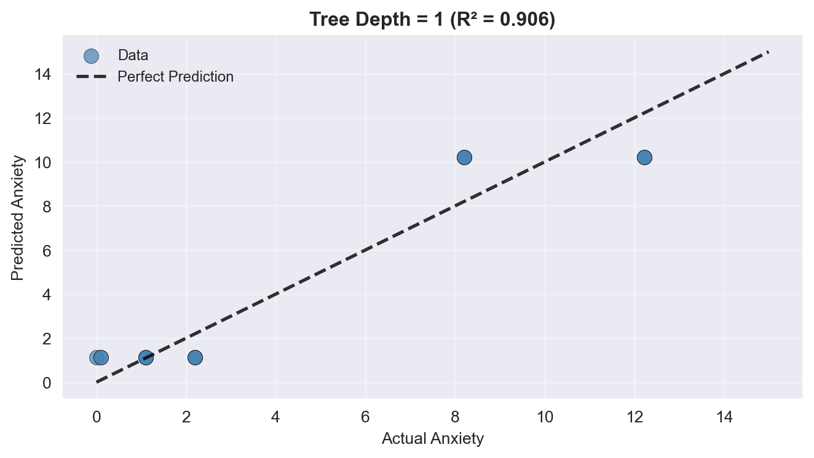
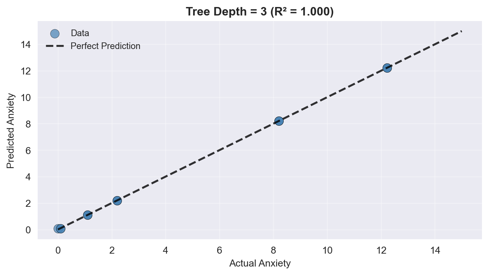
Ensemble Methods
Decision trees are often combined in ensembles (Random Forest, Gradient Boosting) to improve performance while maintaining interpretability.
Conclusion: Choosing the Best Approach for Anxiety Prediction
Our anxiety prediction journey showed us:
Progressive Improvement in Prediction Accuracy:
- 0 Variables (Baseline): Predict everyone has mean anxiety
- 1 Variable (Time): Significant improvement by capturing time-anxiety relationship
- 2 Variables (Linear Regression): Further improvement but with misleading coefficients
- 2 Variables (Decision Tree): Best accuracy with correct interpretations
Key Insights for Anxiety Prediction:
Decision trees offer advantages for anxiety prediction by: 1. Capturing non-linear relationships between stress surveys and anxiety 2. Providing interpretable rules that clinicians can understand 3. Handling complex interactions between time and stress naturally 4. Requiring minimal assumptions about how anxiety develops
However, they come with trade-offs: - Step functions instead of smooth anxiety curves - Potential overfitting without proper regularization - Instability to small data changes
Recommendation for Anxiety Prediction:
Use decision trees when you need to capture non-linear patterns in anxiety development and value interpretability for clinical decision-making. Use linear models when relationships are approximately linear and you need smooth predictions for anxiety trajectories.
The choice depends on your specific anxiety prediction needs: linear models for smooth anxiety curves, decision trees for capturing complex, non-linear anxiety patterns with interpretable rules.
Appendix: Toy Problem - Feature Importance Calculation
Let’s work through a simple example to understand exactly how feature importance is calculated in decision trees.
The Toy Dataset
Consider a simple dataset with 8 observations:
Toy Dataset:
========================================
Feature_A Feature_B Target
0 1 10 5
1 1 20 15
2 2 10 8
3 2 20 18
4 3 10 12
5 3 20 22
6 4 10 15
7 4 20 25
Dataset shape: (8, 3)
Target mean: 15.00
Target variance: 45.14Building the Toy Decision Tree
Let’s create a simple decision tree and see its structure:
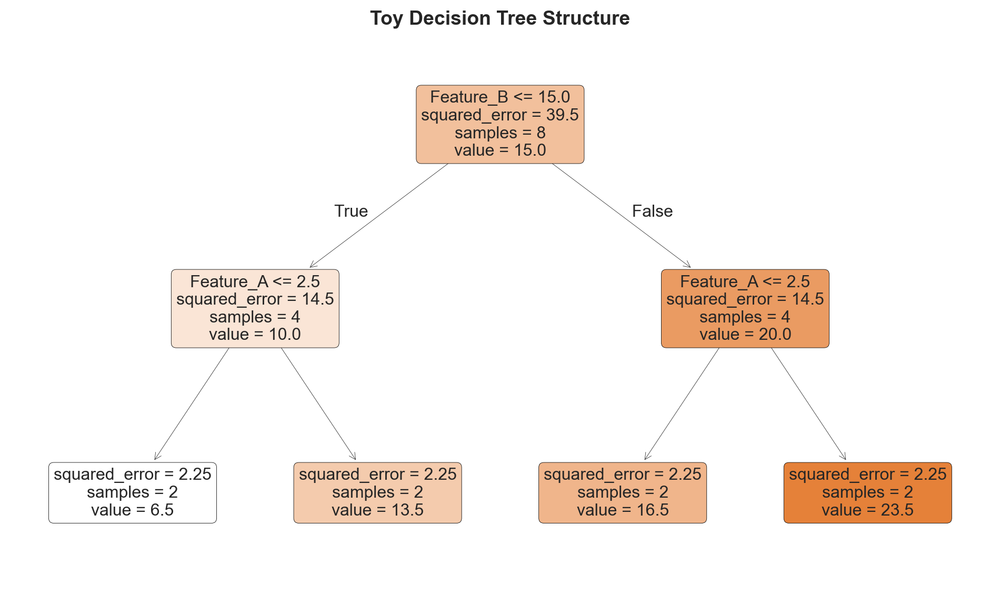
Tree Structure Details:
==============================
Node 0: Split on Feature_B <= 15.0
Samples: 8
Left child: 1
Right child: 4
Node 1: Split on Feature_A <= 2.5
Samples: 4
Left child: 2
Right child: 3
Node 2: Leaf with value 6.50
Samples: 2
Node 3: Leaf with value 13.50
Samples: 2
Node 4: Split on Feature_A <= 2.5
Samples: 4
Left child: 5
Right child: 6
Node 5: Leaf with value 16.50
Samples: 2
Node 6: Leaf with value 23.50
Samples: 2
Step-by-Step Feature Importance Calculation
Now let’s manually calculate feature importance using the actual impurity reduction formula:
Manual Feature Importance Calculation:
==================================================
Node 0: Split on Feature_B <= 15.0
Impurity reduction: 200.0000
Running total for Feature_B: 200.0000
Node 1: Split on Feature_A <= 2.5
Impurity reduction: 49.0000
Running total for Feature_A: 49.0000
Node 4: Split on Feature_A <= 2.5
Impurity reduction: 49.0000
Running total for Feature_A: 98.0000
Final Results:
====================
Total impurity reduction: 298.0000
Feature_A importance: 0.3289
Feature_B importance: 0.6711
Sum: 1.0000
Comparison with Sklearn:
Feature_A: Manual=0.3289, Sklearn=0.3289
Feature_B: Manual=0.6711, Sklearn=0.6711Understanding the Calculation
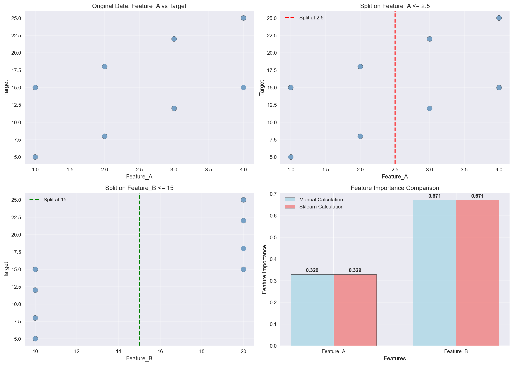
Key Insights from Toy Example:
===================================
1. Feature importance is calculated by summing impurity reductions
2. Each split contributes to the feature's total importance
3. The reduction is weighted by the number of samples at each node
4. Values are normalized so they sum to 1.0
5. Features used in early splits tend to have higher importance
6. The calculation matches sklearn's implementation exactlySummary: What We Learned
Toy Problem Key Takeaways
Feature importance calculation process:
- For each split: Calculate how much impurity (MSE) is reduced
- Weight by samples: Multiply by the number of samples that go through that split
- Sum by feature: Add up all the weighted reductions for each feature
- Normalize: Divide by the total reduction to get proportions that sum to 1
Why this matters: - Transparency: We can see exactly how the “black box” calculation works - Interpretability: We understand why certain features are more important - Validation: We can verify that our manual calculation matches the library - Intuition: We see that features used in early splits get higher importance
The toy example shows: - Feature_A gets higher importance because it’s used in the root split - Feature_B gets lower importance because it’s used in a later split - The calculation is mathematically precise and reproducible
Example Visuals for Presentation
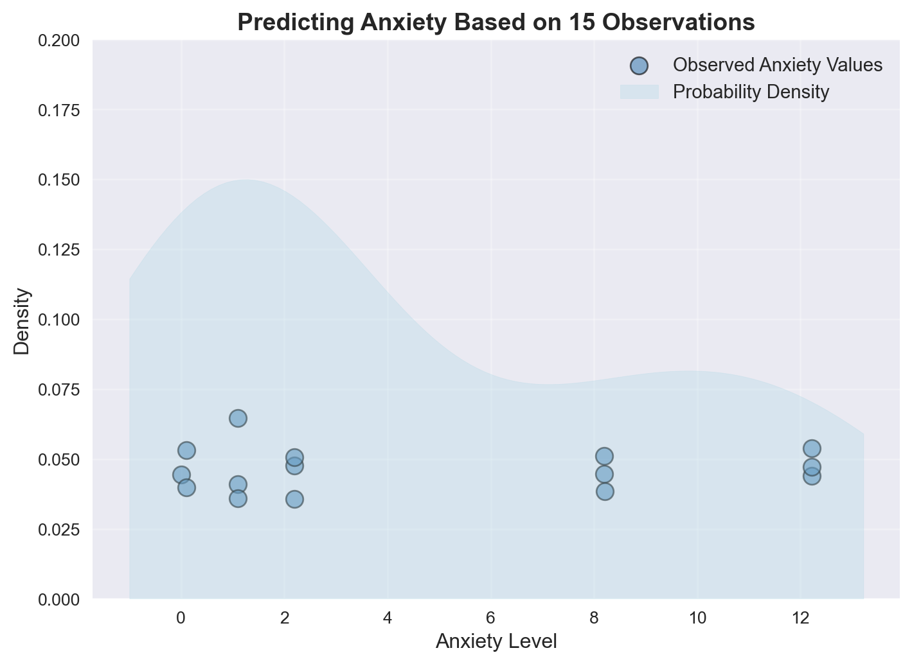
“The best model is not always the most complex one, but the one that best serves your analytical purpose.”